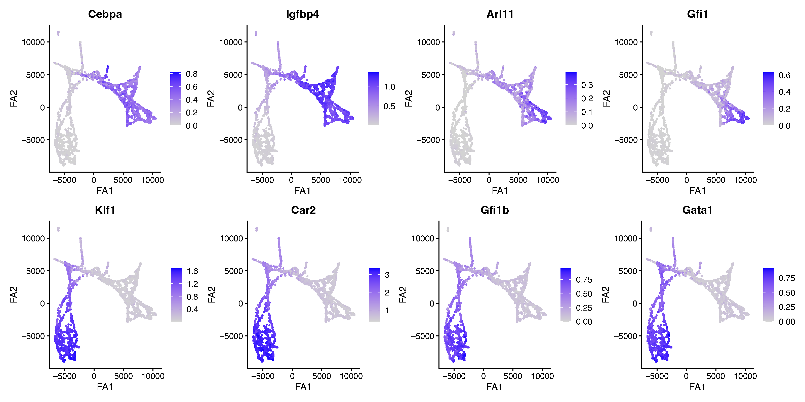
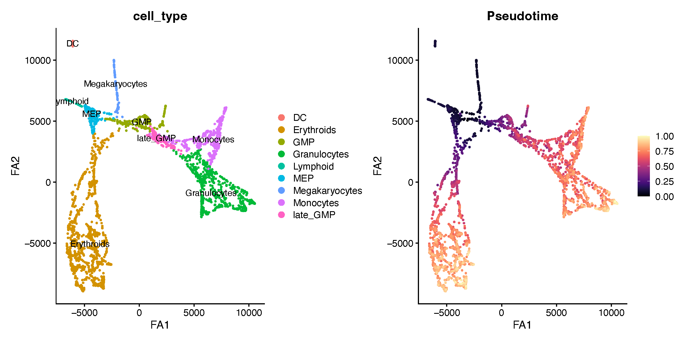
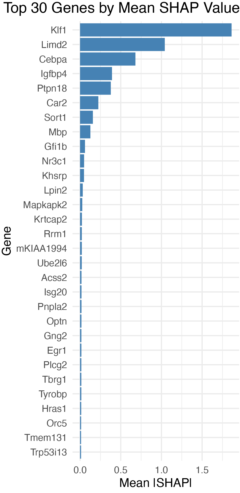
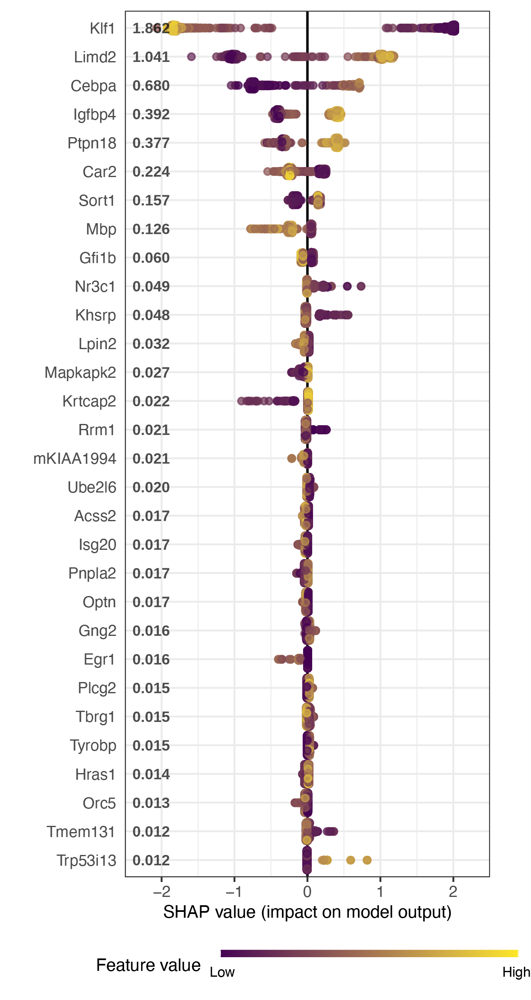

SHAP key driver gene analysis
shap_key_drivers.RmdIn this tutorial, we demonstrate how to identify the genes that best
separate two groups of cells using SHAP (SHapley Additive
exPlanations) values. We refer to these genes as key
driver genes. Rather than testing each gene independently as in
differential expression, compact trains a gradient-boosted
decision tree classifier (XGBoost) to distinguish two groups of cells
based on their gene expression, and then uses SHAP to measure how much
each gene contributes to that classification. This gives a ranking of
genes by their importance in a single multivariate model that considers
all genes jointly.
For this tutorial we use the mouse hematopoiesis dataset from Kamimoto et al. 2023 (the CellOracle study), where cells differentiate along two branches: the granulocyte-monocyte (GM) lineage and the megakaryocyte-erythroid (ME) lineage. Our goal is to find the genes that most strongly distinguish cells committing to the GM lineage from those committing to the ME lineage.
What is SHAP?
To identify genes that contribute to distinguishing cellular states,
compact trains an XGBoost (extreme gradient boosting)
classifier using gene expression values from the Seurat object, and then
computes SHAP (SHapley Additive exPlanations) values to
quantify the contribution of each gene to the model’s predictions. SHAP
values are grounded in cooperative game theory: each gene is assigned a
feature-attribution score that accounts for both its independent effect
and its interactions with other genes. For each cell or nucleus, a local
SHAP value is computed for every input gene using the
SHAPforxgboost framework.
Global gene importance is defined as the mean absolute SHAP value across all cells:
where is the SHAP value for gene in cell (the superscript is a cell index, not an exponent) and is the total number of cells. Genes are ranked by , and the top-ranked genes are prioritized as candidate key drivers of the transcriptional state or perturbation response being compared.
Interpretation — what SHAP-prioritized drivers mean
SHAP-prioritized drivers are genes whose expression patterns are most predictive of the specified state or condition in the trained model. They may represent upstream regulators, downstream transcriptional consequences, or correlated markers, and should therefore be interpreted as candidate predictive drivers rather than direct causal regulators.
Load the dataset
First we load the single-cell dataset and the required R libraries
for this tutorial. This dataset has already been processed with hdWGCNA
to construct a transcription-factor co-expression network, and
expression values have been imputed and stored in the
imputed assay.
# single-cell analysis package
library(Seurat)
# plotting and data science packages
library(tidyverse)
library(cowplot)
library(patchwork)
library(viridis)
# co-expression network analysis package
library(hdWGCNA)
# compact
library(compact)
# machine learning backend used by the SHAP analysis
library(xgboost)
# using the cowplot theme for ggplot
theme_set(theme_cowplot())
# set random seed for reproducibility
set.seed(12345)
# load the dataset
seurat_obj <- readRDS('celloracle_tf_net.rds')
seurat_objAn object of class Seurat
6902 features across 2730 samples within 2 assays
Active assay: RNA (3451 features, 0 variable features)
2 layers present: counts, data
1 other assay present: imputed
3 dimensional reductions calculated: pca, draw_graph_fa, diffmapThe object contains two assays: the raw RNA assay and an
imputed assay. We will use the imputed expression values
for the SHAP analysis, since smoothed values give the classifier a
cleaner signal in sparse single-cell data.
Visualizing the two lineages (optional)
Before running the key driver analysis, it is helpful to confirm that
the two lineages are separated in the data and to inspect a few
canonical marker genes. Here we plot known GM-lineage markers
(Cebpa, Igfbp4, Arl11,
Gfi1) and ME-lineage markers (Klf1,
Car2, Gfi1b, Gata1) on the
ForceAtlas2 (draw_graph_fa) embedding, using the imputed
assay.
# set imputed as the active assay for plotting marker expression
DefaultAssay(seurat_obj) <- "imputed"
# GM-lineage markers
gm_markers <- c("Cebpa", "Igfbp4", "Arl11", "Gfi1")
# ME-lineage markers
me_markers <- c("Klf1", "Car2", "Gfi1b", "Gata1")
# helper to make a consistent FeaturePlot for each gene
plot_marker <- function(gene){
FeaturePlot(
seurat_obj,
features = gene,
reduction = "draw_graph_fa",
pt.size = 0.5
) + labs(x = "FA1", y = "FA2")
}
# GM markers on top row, ME markers on bottom row
gm_plots <- wrap_plots(lapply(gm_markers, plot_marker), nrow = 1)
me_plots <- wrap_plots(lapply(me_markers, plot_marker), nrow = 1)
gm_plots / me_plots
The GM markers (top row) and ME markers (bottom row) light up in opposite regions of the embedding, confirming that the two lineages occupy distinct branches.
We can also visualize the cell type annotations and the pseudotime ordering to see the overall structure of the differentiation trajectory.
# plot cell type annotations
DefaultAssay(seurat_obj) <- "RNA"
p1 <- DimPlot(
seurat_obj,
reduction = "draw_graph_fa",
group.by = "cell_type",
pt.size = 0.5,
label = TRUE
) + labs(x = "FA1", y = "FA2")
# plot pseudotime
seurat_obj$Pseudotime <- as.numeric(seurat_obj$Pseudotime)
p2 <- FeaturePlot(
seurat_obj,
features = "Pseudotime",
reduction = "draw_graph_fa",
pt.size = 0.5,
order = TRUE
) +
scale_color_viridis(option = "magma") +
labs(x = "FA1", y = "FA2")
p1 | p2
Define the groups for comparison
The SHAP key driver analysis compares two groups of cells, specified
by a column in the Seurat object’s metadata. Here we create a single
Lineage column that labels each cell as
Lineage_GM, Lineage_ME, or False
(cells that belong to neither lineage).
obj <- seurat_obj
# start with all cells unassigned
obj$Lineage <- "False"
# label cells belonging to each lineage
obj$Lineage[obj$Lineage_ME %in% "True"] <- "Lineage_ME"
obj$Lineage[obj$Lineage_GM %in% "True"] <- "Lineage_GM"
table(obj$Lineage) False Lineage_GM Lineage_ME
139 1315 1276Tip: how the False cells are handled
FindShapKeyDriver only uses the cells in
ident.1 and ident.2, so the False
cells are automatically ignored in the comparison below. If you prefer,
you can subset() the object to the two lineages first.
Identify SHAP key driver genes
Now we run FindShapKeyDriver to train the classifier and
compute SHAP values. FindShapKeyDriver reads expression
from the default assay, so we first set the active
assay to imputed; by default it uses the data
layer of that assay (controlled by the expr_layer
argument). The conditions argument names the metadata
column that defines the groups. Here we run a pairwise
comparison by supplying ident.1 and ident.2;
ident.1 is treated as the positive class. (For a
one-versus-rest comparison, supply set_case instead of the
two ident arguments.) We pass all genes in the object as
candidate features via variable_genes, and
out_dir specifies where results are written.
# use imputed expression values as features
DefaultAssay(obj) <- "imputed"
obj <- FindShapKeyDriver(
obj,
conditions = "Lineage",
ident.1 = "Lineage_GM",
ident.2 = "Lineage_ME",
variable_genes = rownames(seurat_obj),
out_dir = "Lineage_GM_vs_Lineage_ME/"
)The SHAP results are stored on the returned object in
obj@misc$shap — this is where the plotting functions below
look for them, so be sure to assign the output back to obj.
The slot includes shap_summary (mean absolute SHAP per
gene, sorted), key_drivers (the top-ranked genes), and
shap_long (per-cell, per-gene SHAP values). If
out_dir is set, the same results are also written to disk
under a shap_output_<mode>/ subfolder (here,
Lineage_GM_vs_Lineage_ME/shap_output_full/), which can be
reloaded later with ReloadShapOutput().
By default FindShapKeyDriver runs in
mode = "full", training on all cells. You can instead set
mode = "split" for a train/test split or
mode = "cv" for k-fold cross-validation; in those two modes
a held-out AUC is reported (when the pROC package is
installed) as a measure of how separable the two groups are. Note that
the cells over which SHAP values are computed depend on the mode: all
cells in "full", the held-out test cells in
"split", and the pooled held-out folds in
"cv".
Ranking is by mean absolute SHAP value, so the
shap_summary table is always non-negative — the
direction of each gene’s effect (toward the GM or the ME
lineage) is read off the beeswarm plot below, where per-cell SHAP values
keep their sign. Because ident.1 is the positive class,
positive SHAP values push a cell toward the GM lineage and negative
values toward the ME lineage.
Visualize the SHAP results
Both plotting functions return a ggplot object, so you
can save them with ggsave() as shown below. Alternatively,
each function can write the figure for you if you set
save_plot = TRUE together with out_dir and
filename — in that case PDFs are written with the cairo
device, and BeeswarmplotShap rasterizes the point layer,
which keeps file sizes manageable when plotting many cells.
Bar plot of top driver genes
BarplotShap ranks genes by their mean absolute SHAP
value and shows the top top_n genes. This is the quickest
way to see which genes carry the most weight in separating the two
lineages.
p <- BarplotShap(obj, top_n = 30)
ggsave(
"Lineage_GM_vs_Lineage_ME/barplot_top_shap_genes_Lineage_GM_vs_Lineage_ME.pdf",
plot = p, width = 4, height = 8, dpi = 300
)
p
Beeswarm plot of SHAP values
BeeswarmplotShap shows the full distribution of SHAP
values for each of the top genes. Each point is a single cell: its
position on the x-axis is the gene’s SHAP value in that cell, and its
color encodes the gene’s expression level (from min_color
for low expression to max_color for high expression). This
reveals not just which genes are important, but how
they drive the classification — for example, whether high expression of
a gene pushes cells toward the GM or the ME lineage.
p <- BeeswarmplotShap(
obj,
top_n = 30,
min_color = "#440154",
max_color = "#FDE725"
)
ggsave(
"Lineage_GM_vs_Lineage_ME/beeswarm_top_shap_genes_Lineage_GM_vs_Lineage_ME.pdf",
plot = p, width = 4, height = 8, dpi = 300
)
p
In this plot, genes near the top are the strongest drivers. A gene whose high-expression cells (yellow) sit on the positive side of the axis and whose low-expression cells (purple) sit on the negative side is one that is turned on specifically in one lineage and off in the other.
Troubleshooting: if BeeswarmplotShap
errors with object ‘new_labels’ not found
Define new_labels <- NULL in your global environment
before calling the function:
new_labels <- NULLThis is a known scoping issue in an upstream dependency
(SHAPforxgboost) and the workaround can be removed once it
is fixed upstream.
Interpretation
The key driver analysis identifies genes whose expression the model relies on to tell the two lineages apart. Because the ranking comes from a multivariate classifier rather than gene-by-gene testing, the top drivers tend to be the most informative markers of lineage commitment, accounting for the redundancy among co-expressed genes. Driver genes that are also transcription factors or hub genes of your co-expression modules are especially worth following up, since they are strong candidates for regulators of the lineage decision.